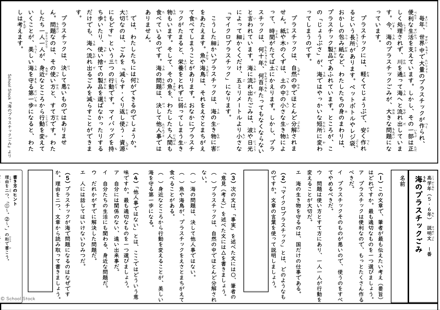

先生のための、道具と教材の棚
現役の教員がつくった、
現役の教員がつくった、
無料の道具と教材の棚。
授業と校務を少し軽くする、ツール・プリント・実践のおすそ分け。完成品は、いつも無料です。
授業と校務を少し軽くする、ツール・プリント・実践のおすそ分け。完成品は、いつも無料です。

インストール不要・完全無料・通信ゼロ。PDFの結合・修正・縦書きも、児童の情報を外に出さず、このパソコンの中だけで。
くわしく見る →
読解・言葉・作文の3分野、全学年ぶん。そのまま印刷して使える、全79枚。すべて自作・無料です。
くわしく見る →Gemini・NotebookLM・Google Workspaceで生まれた授業や校務のアイデア集。見つけて、持ち帰って、明日の教室で試せます。
くわしく見る →